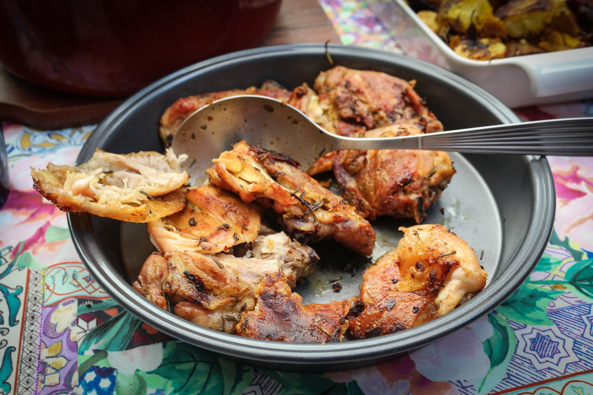

Galinhada
Ingredientes
- 1 xícara(s) de chá de ervilha
- 1 xícara(s) de chá de tomate picado sem sementes
- 3 xícara(s) de chá de caldo de frango
- 1 e 1/2 xícara(s) de chá de arroz cru
- 1 xícara(s) de chá de cebola picada
- 2 folha(s)
de louro
- 1 xícara(s) de chá de linguiça fatiada
- 1 xícara(s) de chá de bacon picado
- 1 colher(es) de sopa de colorau
- 2 colher(es) de sopa de salsa picada
- 2 colher(es) de sopa de azeite sal a gosto
- 1kg(s) de coxa de frango
- 1/2 pimentão vermelho cortado em tiras
Modo de Preparo
Em uma panela, doure os ingredientes em fogo médio. Adicione a água e deixe ferver em fogo baixo por 1 hora.Modo de preparo da galinhada: Em uma tigela, tempere o frango com sal e o suco de limão. Em uma panela, aqueça o azeite com o colorau e coloque o frango temperado. Deixe dourar por alguns minutos. Acrescente o bacon e deixe por mais alguns minutos. Coloque a linguiça, o louro, o alho e a cebola e deixe murchar. Coloque o arroz e deixe refogar por mais alguns minutos. Acrescente o caldo de frango diluído na água. Deixe cozinhar em fogo bem baixo. Quando o arroz estiver quase pronto, coloque o tomate, a ervilha e a salsa picada. Decore com as tiras de pimentão.